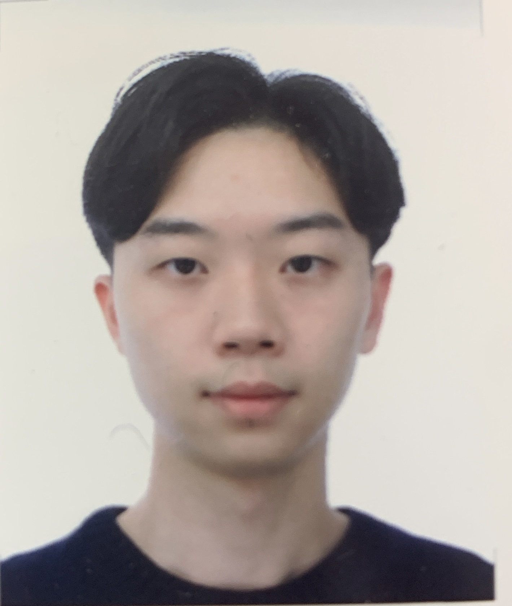

About Me
Besides my CS major, to date, I have completed coursework in Game Theory, Principles of Microeconomics, and Corporate Finance. Presently, I am further broadening my knowledge by studying Principles of Macroeconomics and Investments. This combination of computer science and financial economics provides me with a unique and comprehensive perspective, which I believe will be beneficial in a research environment.
Additionally, my experience in research began in high school, where I conducted a quantitative study and authored an extensive academic essay on self-learning, comprising over 35,000 words. This not only familiarized me with the APA format but also taught me the rigorous process of conducting research.
Last Trip to Turkey Traveling to Turkey last summer was like stepping into a vibrant tapestry of history and culture, a place where the air is fragrant with the scent of spices and the warmth of the Mediterranean sun. Istanbul, the city that straddles two continents, was a feast for the senses. The grandeur of the Hagia Sophia and the majestic beauty of the Blue Mosque were breathtaking, standing as proud testimonies to the city's storied past. The bustling Grand Bazaar was a kaleidoscope of color and sound, with merchants calling out and selling everything from intricate carpets to delicate ceramics.
Venturing beyond, Cappadocia's otherworldly landscapes were a marvel, with hot air balloons dotting the sky at dawn, offering panoramic views of the fairy chimneys and golden valleys. In Pamukkale, the cascading white terraces, warm with mineral-rich waters, were a soothing respite.
Throughout the journey, I was enveloped in Turkey's rich tapestry, its people as inviting as the aromatic flavors of their traditional dishes, leaving me with memories that linger, much like the haunting notes of a Turkish melody at sunset.
Traveling to Turkey last summer was like stepping into a vibrant tapestry of history and culture, a place where the air is fragrant with the scent of spices and the warmth of the Mediterranean sun. Istanbul, the city that straddles two continents, was a feast for the senses. The grandeur of the Hagia Sophia and the majestic beauty of the Blue Mosque were breathtaking, standing as proud testimonies to the city's storied past. The bustling Grand Bazaar was a kaleidoscope of color and sound, with merchants calling out and selling everything from intricate carpets to delicate ceramics.
Venturing beyond, Cappadocia's otherworldly landscapes were a marvel, with hot air balloons dotting the sky at dawn, offering panoramic views of the fairy chimneys and golden valleys. In Pamukkale, the cascading white terraces, warm with mineral-rich waters, were a soothing respite.
Throughout the journey, I was enveloped in Turkey's rich tapestry, its people as inviting as the aromatic flavors of their traditional dishes, leaving me with memories that linger, much like the haunting notes of a Turkish melody at sunset.